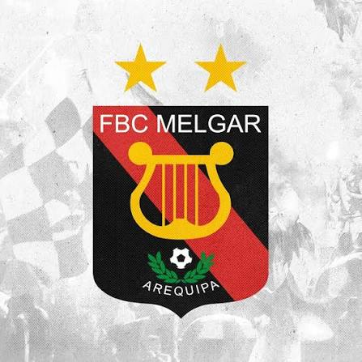
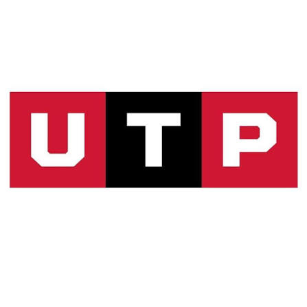
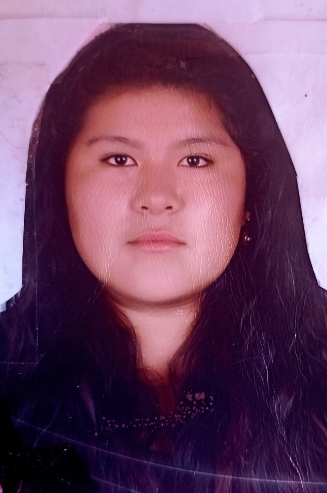
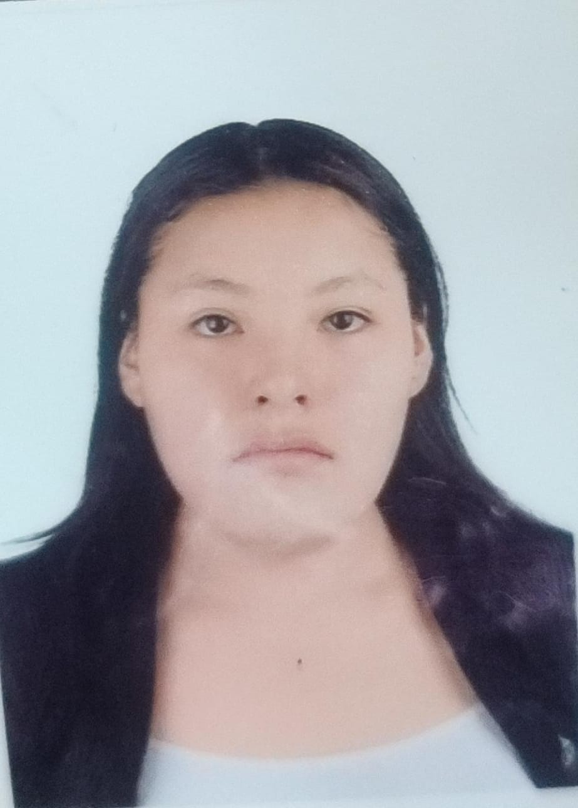

Comprender
Conocer la dinámica del área, sus procesos y la forma en que se relacionan los equipos.

Diagnóstico Organizacional
Agradecemos profundamente el espacio y la disposición brindada para recibirnos. Somos estudiantes de la Universidad Tecnológica del Perú y estamos desarrollando un trabajo académico orientado a comprender la dinámica organizacional del Club Melgar de Arequipa.

Presentación
En esta primera reunión queremos presentarnos, explicar el objetivo del trabajo y, sobre todo, conocernos para establecer una buena coordinación en las actividades que realizaremos posteriormente de manera presencial.
Nuestro trabajo consiste en realizar un diagnóstico organizacional en el área que nos han permitido conocer. Buscamos comprender cómo funciona la organización en su día a día, considerando elementos como la comunicación, la interacción entre colaboradores, la organización del trabajo, las condiciones de desarrollo y otros aspectos relevantes.
Equipo
Zaid Joseph Huaquisto Zapana
Ronny Billy Flores Chino
Yeimy Carpio Alfaro

Elian Medaly Quispe Sucary

Patricia Ximena Hancco Rosales
Objetivos
Conocer la dinámica del área, sus procesos y la forma en que se relacionan los equipos.
Reconocer factores de comunicación, organización y cultura que impactan el trabajo diario.
Desarrollar una experiencia de investigación responsable, ética y en un ambiente de confianza.
Servicios
Conocimiento de las instalaciones, ambiente laboral y operación general del área.
Conversaciones con colaboradores para comprender experiencias, procesos y perspectivas.
Aplicación de técnicas e instrumentos para identificar aspectos relevantes de la organización.
Adaptación del trabajo a los tiempos y responsabilidades de cada persona involucrada.
Contacto
Agradecemos nuevamente su disposición para apoyarnos. Queremos generar un espacio cómodo, respetuoso y profesional, en el cual podamos convivir con confianza y aprender de su experiencia.
Si tienes dudas o deseas coordinar alguna información, puedes escribir directamente a alguno de nosotros.
Encuesta
Para complementar este diagnóstico organizacional, agradecemos mucho su colaboración en responder una breve encuesta que nos permitirá conocer mejor la percepción institucional, las necesidades del área y aspectos relevantes para el desarrollo del proyecto.
Su opinión es muy valiosa para comprender mejor la realidad del Club Melgar y fortalecer una investigación responsable y útil para la organización.
Ir a la encuesta